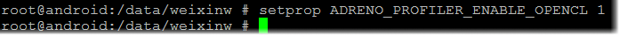

This tutorial explains the basics of setting up an OpenCL application for profiling in the Adreno Profiler.
1) For one-shot applications
These application usually follows a simple control flow and
exits quickly. For these kind of applications, Adreno Profiler needs
to capture all API call trace from the very beginning. So it stalls
the application at the clGetPlatformIDs and pends on connection to
with profiler. After connection being established, user will click
record button in profiler to signal application to continue. Call
trace will be populated after application exits.
2) For looping applications
These application uses OpenCL to compute repetitively. For these
kind of applications, such as APKs, application listens and connects
to Adreno Profiler in a separate thread (not blocking the main/UI
thread). After connection established, user will click record button
in profiler to start and stop profiling. In this way profiler is
able to start and stop profiling at user's will.
3) Enable and disable profiling
In both above scenarios, user will need to explicitly specify the
Android property in the adb shell (after rooting and remounting the
device) that the application will connect to profiler or not.
• To use profiler, please use setprop
ADRENO_PROFILER_ENABLE_OPENCL 1,
• To not use profiler, please use setprop ADRENO_PROFILER_ENABLE_OPENCL ""
1) Root and remount device.
• In windows click Start -> All Programs -> Accessories -> Command Prompt. Or you can use shortcut: Win+R, in the run window, type "cmd" and press enter to open up windows command window.
• Type "adb devices", you should find a device id, if not, check your adb device driver and phone setup.
• Type "adb root", it will root your device, please wait a few seconds to a few minutes, for the device to get into the root mode. (You can type "adb devices" to check it is connected after being rooted)
• Type "adb remount", you should see the device being remounted successfully.
2) Enable profiling in Android system
• In cmd, type "adb shell" to enter the android shell. You should see "root@android" if device is rooted successfully.
• Type "setprop ADRENO_PROFILER_ENABLE_OPENCL 1" to enable profiling. (setprop ADRENO_PROFILER_ENABLE_OPENCL "" to disable)

3) Now you have enabled profiling and ready to open Adreno Profiler
• You can verify your application, by executing your application /data/OpenCL/HelloOpenCL for example, and the application will show "Pending profiler connection..."
• Now you can open up Adreno profiler and connect to your application to start profiling.